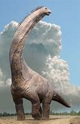

Background About Dinosaurs

When it comes to dinosaurs, there are three main types of dinosaurs that come to mind: herbivores, carnivores, and omnivores. By analyzing data complied in a dataset memo and collected by Kamran Janjua with numbers taken from The Natural History Museum, we will take a deep dive into the difference specifically between herbivorous and carnivorous dinosaurs and how their diets affect things such as length, height, and the place they live.
Dinosaurs are creatures that have not roamed the earth for over 245 million years. All data on dinosaurs are compiled based on previous findings and then used comparatively to other mammals.
To start, animals' living habits determine important factors in their lives, not the other way around. After speaking to a Dinosaur expert and curator of Dinosauria at the Smithsonian National Museum of Natural History, Matthew Carrano, more information about not only dinosaur eating habits but also mammal eating habits, in general, was discovered. Carrano explains, “Animals have dietary needs, and those needs are often evolved in response to other factors, such as where the animals live, how big they are (and how fast they grow), etc. I think it’s basically impossible for an animal to evolve a diet that isn’t related to the foods available where it already lives.”
Looking at the Data
The data compiled by Janjua starts to give suspicion of the idea that herbivorous dinosaurs are bigger and taller. Although there is no direct data that proves this when taking a look at the dataset the length of herbivores is most concentrated in the bigger numbers near 35 meters, whereas the carnivores are concentrated around five to 15 meters.
Carrano goes ahead and proves the suspicions of this data are accurate. Carrano says, “The largest forms are herbivores, and the biggest carnivores are about 10 times smaller than the biggest herbivores.” This is quite a substantial difference in size between carnivores and herbivores.
Carrano establishes that the norms applying to other mammals that are carnivores and herbivores also apply to dinosaurs. Necps-a New England carnivorous planet society explains the size difference between herbivores versus carnivores in mammals. An article written by Normandi explains that because there are vastly more plants readily available herbivores have the ability to consume more food and therefore grow bigger. Another common reason mentioned is how these types of foods are digested. Herbivores have longer intestines which help to digest plants, whereas carnivores have shorter intestines and higher stomach acidity which helps to digest meat.
Additionally, Carrano illuminates that carnivores need to be smaller to catch their prey. There is high energy exertion that goes into trying to catch prey, which herbivores don’t need. If carnivores were as big as herbivores they would be exerting a lot more energy than they already do just to catch one meal.

Why do Dinosaurs Live Where They Do
Plants can be found in practically any place on earth, but data from Janjua, hints that herbivorous dinosaurs were predominantly in the west. This leads to the question as to why that might be. During the Triassic Period the continents were one big landmass known as Pangea so Janjua mostly uses data from The Natural History Museum to guess where the dinosaurs might have been if the continents were normal.
Herbivorous dinosaurs did seem to take a special liking to a few specific land formations-Bob Strauss discovered for ThoughtCo.-including but not limited to: plains, wetlands, riparian forests (which were found in jurassic North America), swamp forest, deserts, lagoons, polar regions, rivers and lakes (predominately South America and Eurasia), islands and lastly shorelines (specifically western America, such as Colorado and New Mexico). So although there were many regions herbivores liked, a lot of these regions were commonly found within the western hemisphere, or the modern day westernized society, for example current day Eurasia (Europe and Asia).
It is also important to keep in mind that different types of dinosaurs were around during different time periods including: Jurassic, Cretaceous, and Triassic periods. Therefore the concentration of where dinosaurs lived varied during the different periods. But at the end of the day, the location that dinosaurs ended up was purely determined by their diet and what they needed to survive. Therefore herbivores had a bit more freedom than carnivores.
Looking Forward
Carrano left with a little dinosaur dietary fun fact. “Mammals are unusual in that they only have two “sets” of teeth in their lifetimes…but dinosaurs replaced their teeth regularly throughout their lives. So they didn’t have to worry about wearing them out, and in that sense could probably cope with very tough vegetation without having any bad effects.”
Dinosaurs seem to shadow normal mammal dietary rules, but they have a few unique exceptions and there is still so much we don’t know about them. Every day we learn more and more about dinosaurs, and something as basic as their diet is the first step to understanding the full picture of what life on earth looked like during the time of dinosaurs.